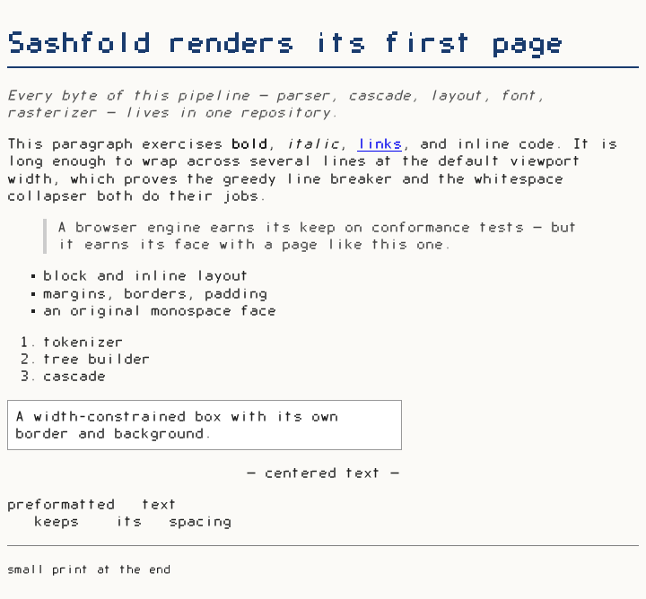
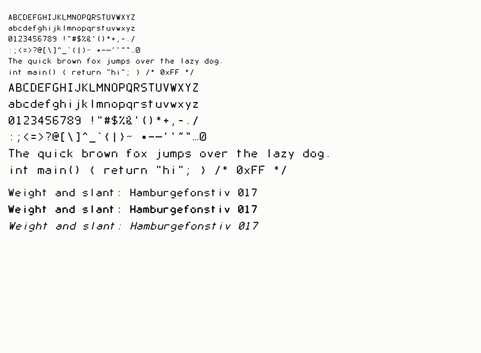

Sashfold
A web browser engine written from scratch. Every byte.
HTML, CSS, layout, fonts, networking, image codecs — one repository, three operating systems.
Every byte of code that ships in a Sashfold binary is written in this repository.
No vendored libraries, no dependencies, no “temporary” borrowed code. The boundary is the operating system itself and the language runtime — the things every program on the machine already stands on. On Linux that goes all the way down: no GTK, no Qt, no SDL, not even libwayland — Wayland is a protocol over a socket, and Sashfold speaks it directly, the same way it speaks HTTP. The pledge is enforced by a CI gate that reads the built binary’s import table and fails the build if anything else appears.
What Sashfold will never do
- No telemetry
- No sponsored tiles
- No default-search auction
- No account requirement
- No cloud AI
- No feature-removal churn
- No self-updater
- No settings outside human-readable files
Zero dependencies is also a security stance: no supply chain to poison, no vendored CVE lag, nothing to audit but the one repository. Every parser is fuzzed from the week it is born.
Graded in public
Compatibility is never vibes here — it is numbers against fixed public yardsticks, enforced by baselines in CI that only ratchet upward.
The renderer is deterministic by construction — its own font, integer-only rasterization, no system text stack — so a page renders to the same bytes on Windows, Linux, and macOS. Reference screenshots are compared byte-for-byte on every commit, and so are screenshots of the browser chrome itself: a script drives the same shell the window uses, headlessly, on all three OSes. A live HTTPS page fetches, decompresses, parses, and renders to pixels in about a quarter of a second, through Sashfold’s own URL parser, HTTP/1.1 client, and inflate. Every night the engine renders a hundred pages of the live web — drawn from the Tranco list of the most visited domains — and the pictures go up unretouched, each with what its load cost: the Sashfold 100.


Why another engine
Because the reading web deserves a fast, private, transparent way to read it — and because an engine whose every byte is in one place is an engine anyone can learn from, audit, or embed without dragging three hundred megabytes behind it. Sashfold competes with nobody but the spec.